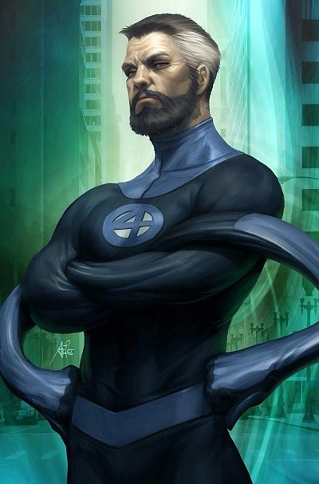

Коротко про героя
Рід Річардс - одним із найвеликиш науково обдарованих людей у Marvel Universe. Після облучення космічними променями він розвинув здібність розтягувати своє тіло. Його інтелект та лідерство рятували світ багато разів.
Здібності та переваги
- Геніальний інтелект і наукові знання
- Розтягування тіло
- Технічне мастерство і винаходи
- Стратегічне лідерство